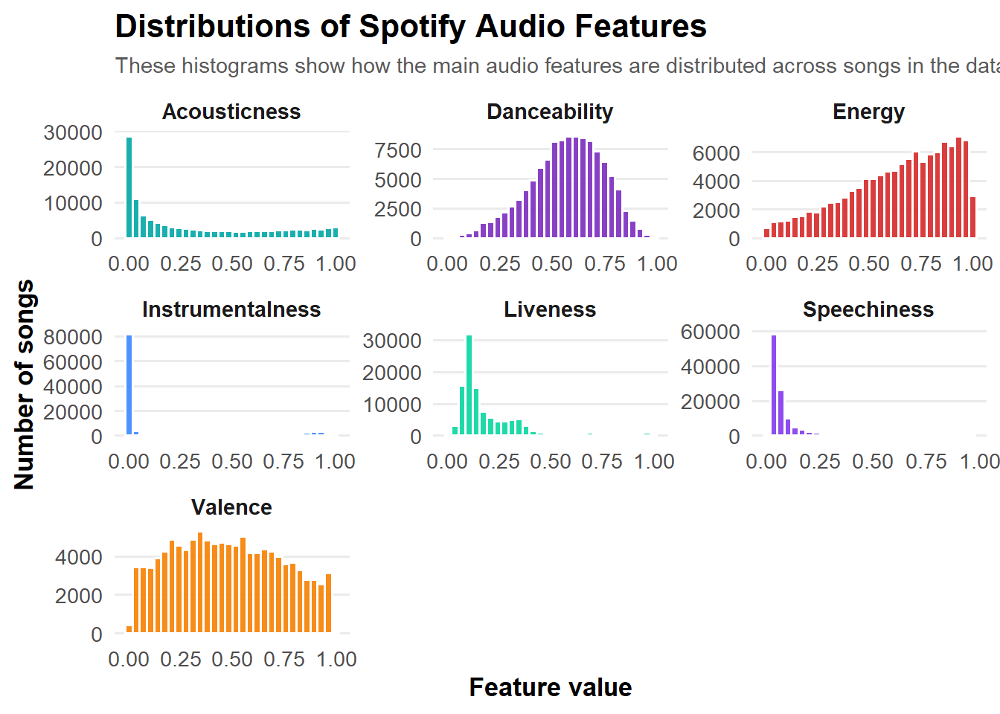
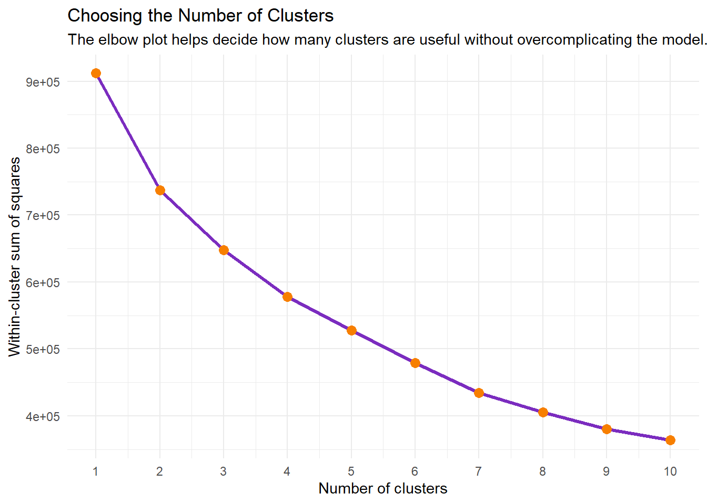

Portfolio 6: Understanding Music Preferences Using Spotify Audio Features 1
Learning K-Means Clustering with Spotify Data
Goal: For this project, I used the same Spotify song data as my last piece and wanted to identify different listening profiles. Each song had audio features such as danceability, energy, valence, acousticness, and tempo. I wanted to try clustering to group songs with similar features, then interpret each group as a possible listener persona. But as I was working through the piece, it ended up being a little bit more complicatd than I originally expected, so I decided to split it into two pieces (hope that’s ok). The goal of this piece is to learn how to do k-means clustering. I wanted to practice preparing numeric features, scaling the data, using an elbow plot, and running a basic clustering model.
Load packages and data
library(tidyverse)## ── Attaching core tidyverse packages ──────────────────────── tidyverse 2.0.0 ──
## ✔ dplyr 1.2.0 ✔ readr 2.2.0
## ✔ forcats 1.0.1 ✔ stringr 1.6.0
## ✔ ggplot2 4.0.3 ✔ tibble 3.3.1
## ✔ lubridate 1.9.5 ✔ tidyr 1.3.2
## ✔ purrr 1.2.1
## ── Conflicts ────────────────────────────────────────── tidyverse_conflicts() ──
## ✖ dplyr::filter() masks stats::filter()
## ✖ dplyr::lag() masks stats::lag()
## ℹ Use the conflicted package (<http://conflicted.r-lib.org/>) to force all conflicts to become errorslibrary(knitr)
spotify_raw <- read_csv("data/dataset.csv", show_col_types = FALSE)## New names:
## • `` -> `...1`Data Cleaning
I will first start cleaning the dataset by selecting the columns most relevant to this project. I kept song-identifying information such as track name, artist, and genre so I could interpret the results later. I also kept numeric audio features because these are the variables that will be used in the analysis.
spotify_clean <- spotify_raw %>%
select(
track_name,
artists,
album_name,
track_genre,
popularity,
danceability,
energy,
valence,
acousticness,
instrumentalness,
speechiness,
liveness,
tempo
) %>%
drop_na()
glimpse(spotify_clean)## Rows: 113,999
## Columns: 13
## $ track_name <chr> "Comedy", "Ghost - Acoustic", "To Begin Again", "Can'…
## $ artists <chr> "Gen Hoshino", "Ben Woodward", "Ingrid Michaelson;ZAY…
## $ album_name <chr> "Comedy", "Ghost (Acoustic)", "To Begin Again", "Craz…
## $ track_genre <chr> "acoustic", "acoustic", "acoustic", "acoustic", "acou…
## $ popularity <dbl> 73, 55, 57, 71, 82, 58, 74, 80, 74, 56, 74, 69, 52, 6…
## $ danceability <dbl> 0.676, 0.420, 0.438, 0.266, 0.618, 0.688, 0.407, 0.70…
## $ energy <dbl> 0.4610, 0.1660, 0.3590, 0.0596, 0.4430, 0.4810, 0.147…
## $ valence <dbl> 0.7150, 0.2670, 0.1200, 0.1430, 0.1670, 0.6660, 0.076…
## $ acousticness <dbl> 0.0322, 0.9240, 0.2100, 0.9050, 0.4690, 0.2890, 0.857…
## $ instrumentalness <dbl> 1.01e-06, 5.56e-06, 0.00e+00, 7.07e-05, 0.00e+00, 0.0…
## $ speechiness <dbl> 0.1430, 0.0763, 0.0557, 0.0363, 0.0526, 0.1050, 0.035…
## $ liveness <dbl> 0.3580, 0.1010, 0.1170, 0.1320, 0.0829, 0.1890, 0.091…
## $ tempo <dbl> 87.917, 77.489, 76.332, 181.740, 119.949, 98.017, 141…Check data
After cleaning, I want to check the size of the dataset. I want to see how many songs are available for the analysis.
dim(spotify_clean)## [1] 113999 13Spotify Audio Features
Before using the audio features my analysis, I wanted to define what each feature means. These variables are important because they are the inputs used to group songs into different listening profiles.
These features describe different parts of how a song sounds or feels. For example, danceability and energy describe movement and intensity, while valence describes the emotional tone of a song. I used these variables because they connect well to possible listening moods and preferences.
feature_descriptions <- tibble(
Feature = c(
"Danceability",
"Energy",
"Valence",
"Acousticness",
"Instrumentalness",
"Speechiness",
"Tempo"
),
Meaning = c(
"How suitable a song is for dancing",
"How intense or active a song feels",
"How positive or happy a song sounds",
"How acoustic the song is",
"How likely the song is to have no vocals",
"How much spoken-word content the song has",
"The speed of the song in beats per minute"
)
)
knitr::kable(
feature_descriptions,
caption = "Spotify audio features used in this analysis"
)| Feature | Meaning |
|---|---|
| Danceability | How suitable a song is for dancing |
| Energy | How intense or active a song feels |
| Valence | How positive or happy a song sounds |
| Acousticness | How acoustic the song is |
| Instrumentalness | How likely the song is to have no vocals |
| Speechiness | How much spoken-word content the song has |
| Tempo | The speed of the song in beats per minute |
Exploring the Audio Features
Next, let’s explore the audio features visually. This can help us understand the range and distribution of the variables.
But first, I need to reshape the data into a longer format first, so we can make one faceted plot.This allows me to compare the distributions of several audio features at once.
spotify_clean %>%
select(
danceability,
energy,
valence,
acousticness,
instrumentalness,
speechiness,
liveness
) %>%
pivot_longer(
cols = everything(),
names_to = "feature",
values_to = "value"
) %>%
mutate(
feature = str_to_title(feature)
) %>%
ggplot(aes(x = value, fill = feature)) +
geom_histogram(bins = 30, color = "white", alpha = 0.9) +
facet_wrap(~ feature, scales = "free") +
scale_fill_manual(
values = c(
"Danceability" = "#7B2CBF",
"Energy" = "#D62828",
"Valence" = "#F77F00",
"Acousticness" = "#00A6A6",
"Instrumentalness" = "#3A86FF",
"Speechiness" = "#8338EC",
"Liveness" = "#06D6A0"
)
) +
labs(
title = "Distributions of Spotify Audio Features",
subtitle = "These histograms show how the main audio features are distributed across songs in the dataset.",
x = "Feature value",
y = "Number of songs"
) +
theme_minimal(base_size = 13) +
theme(
plot.title = element_text(face = "bold", size = 16),
plot.subtitle = element_text(size = 11, color = "gray35"),
axis.title = element_text(face = "bold"),
strip.text = element_text(face = "bold", size = 11),
panel.grid.minor = element_blank(),
panel.grid.major.x = element_blank(),
legend.position = "none"
)
When I started this piece, I knew that I wanted to do more than make separate graphs of Spotify audio features. I wanted to find a way to group songs based on how they sounded. For example, I was interested in whether the data could reveal groups of songs that felt upbeat, calm, danceable, acoustic, or high-energy.
At first, I was not very familiar with clustering methods. As I explored possible approaches, I learned about k-means clustering, which is a method for grouping observations based on similarity. This seemed like a good fit for my question here because I had several numeric audio features, such as danceability, energy, valence, acousticness, and tempo, and I wanted to see whether songs naturally formed groups based on those features.
I decided to use k-means because it gave me a way to move beyond basic visualization. Instead of only asking, “What does the distribution of energy look like?” I could ask, “Can songs be grouped into different listening profiles based on multiple features at the same time?”
Preparing the Data for Clustering
I only used numeric audio features. I did not include track names, artists, album names, or genres because k-means works with numeric values, not text labels. I chose features that describe movement, mood, intensity, and style.
cluster_features <- spotify_clean %>%
select(
danceability,
energy,
valence,
acousticness,
instrumentalness,
speechiness,
liveness,
tempo
)
glimpse(cluster_features)## Rows: 113,999
## Columns: 8
## $ danceability <dbl> 0.676, 0.420, 0.438, 0.266, 0.618, 0.688, 0.407, 0.70…
## $ energy <dbl> 0.4610, 0.1660, 0.3590, 0.0596, 0.4430, 0.4810, 0.147…
## $ valence <dbl> 0.7150, 0.2670, 0.1200, 0.1430, 0.1670, 0.6660, 0.076…
## $ acousticness <dbl> 0.0322, 0.9240, 0.2100, 0.9050, 0.4690, 0.2890, 0.857…
## $ instrumentalness <dbl> 1.01e-06, 5.56e-06, 0.00e+00, 7.07e-05, 0.00e+00, 0.0…
## $ speechiness <dbl> 0.1430, 0.0763, 0.0557, 0.0363, 0.0526, 0.1050, 0.035…
## $ liveness <dbl> 0.3580, 0.1010, 0.1170, 0.1320, 0.0829, 0.1890, 0.091…
## $ tempo <dbl> 87.917, 77.489, 76.332, 181.740, 119.949, 98.017, 141…K-Means Clustering
We are looking for patterns in the data and grouping similar observations together.
In this project, each song is represented by audio features like danceability, energy, valence, acousticness, and tempo. K-means tries to place songs into a chosen number of groups, called clusters, so that songs inside the same cluster are more similar to each other than to songs in other clusters.
As far as what I have researched and learned, the “k” in k-means is
the number of clusters I ask the model to create. For example, if I
choose k = 4, the model will sort songs into four
groups.
A simple way I thought about k-means is sorting songs into playlists based on how similar they sound. The computer does not know the playlist names ahead of time. It only groups similar songs together. Then I interpret the groups and give them meaningful names. Sounds interesting!
Scaling the Data
Before we move on, I learned that we need to scale the audio features. I need to put variables on a similar range so one feature does not dominate the clustering just because it has larger numbers.
For example, tempo can range above 100 beats per minute, while danceability ranges from 0 to 1. Without scaling, tempo could have too much influence on the model.
cluster_scaled <- scale(cluster_features)
# Need to convert the scaled data back into a data frame so it is easier to work with.
cluster_scaled <- as.data.frame(cluster_scaled)
glimpse(cluster_scaled)## Rows: 113,999
## Columns: 8
## $ danceability <dbl> 0.62923579, -0.84590442, -0.74218362, -1.73329345, 0.…
## $ energy <dbl> -0.71714384, -1.88996564, -1.12266189, -2.31297662, -…
## $ valence <dbl> 0.9293106, -0.7986774, -1.3656735, -1.2769598, -1.184…
## $ acousticness <dbl> -0.85018890, 1.83173645, -0.31548793, 1.77459743, 0.4…
## $ instrumentalness <dbl> -0.5041090, -0.5040943, -0.5041123, -0.5038839, -0.50…
## $ speechiness <dbl> 0.55184081, -0.07899463, -0.27382537, -0.45730674, -0…
## $ liveness <dbl> 0.75873198, -0.59121328, -0.50716999, -0.42837941, -0…
## $ tempo <dbl> -1.14184949, -1.48970122, -1.52829581, 1.98784873, -0…Choosing the Number of Clusters
Before running the final k-means model, I need to figure out the numbers of clusters. I learned that there is something called an elbow plot to help decide how many clusters made sense.
The elbow plot shows how much the clustering improves as the number of clusters increases. At first, adding more clusters usually improves the grouping a lot. Eventually, the improvement becomes smaller. The “elbow” is the point where adding more clusters stops helping as much.
# I set a seed so the results are reproducible.
set.seed(123)
# I calculate the total within-cluster sum of squares for different values of k.
# Lower values mean the songs within each cluster are closer together.
wss <- map_dbl(1:10, function(k) {
kmeans(cluster_scaled, centers = k, nstart = 25)$tot.withinss
})## Warning: did not converge in 10 iterations## Warning: Quick-TRANSfer stage steps exceeded maximum (= 5699950)
## Warning: Quick-TRANSfer stage steps exceeded maximum (= 5699950)
## Warning: Quick-TRANSfer stage steps exceeded maximum (= 5699950)## Warning: did not converge in 10 iterations
## Warning: did not converge in 10 iterations## Warning: Quick-TRANSfer stage steps exceeded maximum (= 5699950)## Warning: did not converge in 10 iterations## Warning: Quick-TRANSfer stage steps exceeded maximum (= 5699950)elbow_data <- tibble(
k = 1:10,
wss = wss
)
ggplot(elbow_data, aes(x = k, y = wss)) +
geom_line(color = "#7B2CBF", linewidth = 1.2) +
geom_point(color = "#F77F00", size = 3) +
scale_x_continuous(breaks = 1:10) +
labs(
title = "Choosing the Number of Clusters",
subtitle = "The elbow plot helps decide how many clusters are useful without overcomplicating the model.",
x = "Number of clusters",
y = "Within-cluster sum of squares"
) +
theme_minimal()
Ok I got too many warnings. I think because the full Spotify dataset is large, I need to use a random smaller sample for the elbow plot. This makes the plot faster and avoids convergence warnings.
# Need to set a seed so the random sample can be reproduced.
set.seed(123)
cluster_sample <- cluster_scaled %>%
sample_n(size = min(10000, nrow(cluster_scaled)))
# Calculate the total within-cluster sum of squares for different numbers of clusters.
wss <- map_dbl(1:10, function(k) {
kmeans(
cluster_sample,
centers = k,
nstart = 25,
iter.max = 100
)$tot.withinss
})
elbow_data <- tibble(
k = 1:10,
wss = wss
)
ggplot(elbow_data, aes(x = k, y = wss)) +
geom_line(color = "#6A4C93", linewidth = 1) +
geom_point(color = "#F77F00", size = 3) +
scale_x_continuous(breaks = 1:10) +
labs(
title = "Elbow Plot for Choosing the Number of Clusters",
x = "Number of clusters",
y = "Within-cluster sum of squares"
) +
theme_minimal()
Wll that was basically the same plot as above, but this was a good sanity check. The curve drops a lot from 1 to 4 clusters, then the improvement starts to become more gradual. So, choosing 4 clusters is reasonable and easy to explain.
Run k-means with 4 clusters
The elbow plot helped us choose the number of groups. Now k-means actually sorts every song into one of those four groups.
After this step, each song has a new label: cluster 1, 2,3, and 4.
set.seed(123)
spotify_kmeans <- kmeans(
cluster_scaled,
centers = 4,
nstart = 25,
iter.max = 100
)
# Add the cluster number back to the original cleaned Spotify data.
# This lets me see which cluster each song belongs to.
spotify_clustered <- spotify_clean %>%
mutate(cluster = factor(spotify_kmeans$cluster))
# Check how many songs ended up in each cluster.
spotify_clustered %>%
count(cluster)## # A tibble: 4 × 2
## cluster n
## <fct> <int>
## 1 1 34006
## 2 2 8868
## 3 3 25626
## 4 4 45499Save clustered data
Since I decided to split it into pieces, I am going to save the clustered data, so the next piece can focus on interpretation instead of rerunning the full clustering process.
write_csv(spotify_clustered, "data/spotify_clustered.csv")